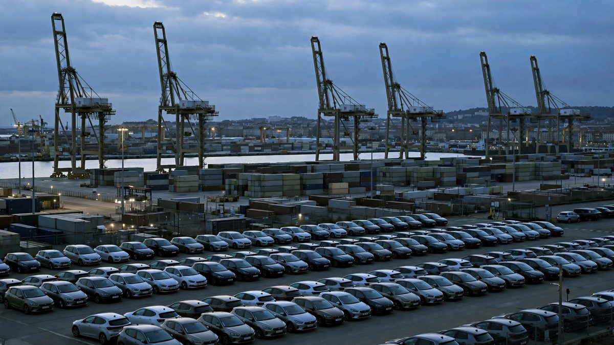

युरोपमा चिनियाँ हाइब्रिड कार निर्यात आधा घटाउने सहमति, ईयू-चीन
बेइजिङले चार वर्षमा युरोपमा हाइब्रिड र प्लग-इन हाइब्रिड ढुवानी आधाभन्दा बढीले घटाउनेछ। ब्रसेल्सले आफ्ना कार निर्मातालाई सास फेर्ने ठाउँ पाउँछ; चीनले दुर्लभ खनिजको द्रुत मार्ग र ४ अर्ब युरोका युरोपेली सामानमा भन्सार छुट पाउँछ।

मुख्य बुँदाहरू
- शुक्रबार युरोप र चीनले व्यापार युद्धमा पहिलो वास्तविक सम्झौता गरे। बेइजिङमा दुई दिनको वार्तापछि ईयू व्यापार आयुक्त मारोस सेफकोभिकले 'साझा समझदारी' को घोषणा गरे, जसअनुसार चीनले चार वर्षमा युरोपेली…
- सम्झौतापछिका सङ्ख्या ठूला छन्। चीनसँगको ईयूको व्यापार घाटा गत वर्ष ३६० अर्ब युरो पुग्यो, दैनिक एक अर्ब युरोभन्दा बढी। सेप्टेम्बरसम्मको वर्षमा युरोपमा प्लग-इन हाइब्रिडको आयात ८६ प्रतिशतले बढ्यो,…
- सेफकोभिकले भने, कटौती चार वर्षमा धेरै मिलियन कार बराबर हुनेछ। उनले यसलाई अन्त्य नभई सुरुवातका रूपमा प्रस्तुत गरे: 'यो अन्त्यबाट धेरै टाढा छ। यो महत्त्वपूर्ण पहिलो कदम हो, तर मात्र पहिलो कदम हो।'
शुक्रबार युरोप र चीनले व्यापार युद्धमा पहिलो वास्तविक सम्झौता गरे। बेइजिङमा दुई दिनको वार्तापछि ईयू व्यापार आयुक्त मारोस सेफकोभिकले 'साझा समझदारी' को घोषणा गरे, जसअनुसार चीनले चार वर्षमा युरोपेली संघमा हाइब्रिड र प्लग-इन हाइब्रिड सवारी साधनको निर्यात आधाभन्दा बढीले घटाउनेछ।
सम्झौतापछिका सङ्ख्या ठूला छन्। चीनसँगको ईयूको व्यापार घाटा गत वर्ष ३६० अर्ब युरो पुग्यो, दैनिक एक अर्ब युरोभन्दा बढी। सेप्टेम्बरसम्मको वर्षमा युरोपमा प्लग-इन हाइब्रिडको आयात ८६ प्रतिशतले बढ्यो, मूल्य २० प्रतिशतले घट्यो, र तीमध्ये आधाभन्दा बढी कार अहिले चीनबाट आउँछन्। ब्रसेल्सको चिनियाँ ईभीमाथिको एन्टी-सब्सिडी छानबिन चलिरहँदा युरोपेली कार निर्माताहरूले आफ्नो घरेलु बजार सस्ता चिनियाँ हाइब्रिडले भरिँदै गएको हेरिरहेका थिए।
सेफकोभिकले भने, कटौती चार वर्षमा धेरै मिलियन कार बराबर हुनेछ। उनले यसलाई अन्त्य नभई सुरुवातका रूपमा प्रस्तुत गरे: 'यो अन्त्यबाट धेरै टाढा छ। यो महत्त्वपूर्ण पहिलो कदम हो, तर मात्र पहिलो कदम हो।'
चीनले पनि केही पाउँछ। बेइजिङले निर्यात नियन्त्रणलाई यथावत् राख्दै नयाँ 'हरित च्यानल' संयन्त्रमार्फत दुर्लभ खनिज र स्थायी चुम्बकका निर्यात इजाजत द्रुत पार्न सहमत भयो। र चीनले कार पार्टपुर्जा, जैतुनको तेल र जुत्तासहित करिब ४ अर्ब युरोका युरोपेली निर्यात समेट्ने सात उत्पादन श्रेणीमा आयात भन्सार घटाउन सहमत भयो, जसमा कम्तीमा २२५ मिलियन युरोको भन्सार बचत अनुमान गरिएको छ।
समझदारी अर्को हप्ताको शिखर सम्मेलनमा ईयू नेताहरूकहाँ जान्छ। चीन र ईयूले जनवरीका लागि भिडियो कल र मार्च २०२७ का लागि अर्को व्यापार बैठक तय गरे।
यो किन महत्वपूर्ण छ
यो ईयू-चीन व्यापार लडाइमा पहिलो ठोस तनावशमन हो, र यसले एउटा नमुना तय गर्छ। युरोपले व्यवस्थित व्यापार मात्रा पाउँछ। चीनले पूर्वानुमेय बजार पहुँचसँगै युरोपेली उद्योग निर्भर दुर्लभ खनिजको द्रुत मार्ग पाउँछ। दुवै पक्षले यसलाई घरमा बेच्न सक्छन्।
सामान्य युरोपेलीहरूका लागि सम्झौताको मूल्य छ। सस्ता चिनियाँ हाइब्रिडले युरोपभरका कार शोरुममा मूल्य घटाउँदै आएका थिए। त्यो आपूर्ति सीमित पार्दा ती मूल्य कटौती सुस्त हुनेछन् वा उल्टिनेछन्। कार किन्नेहरूले सस्तो छेउमा कम विकल्प पाउँछन्; युरोपेली अटो कामदारहरूले सास फेर्ने ठाउँ पाउँछन्। त्यो व्यापारको एक पक्षले अर्कोको लागि तिर्छ।
लगानीकर्ताहरूका लागि दुर्लभ खनिजको खण्ड कार सीमाजस्तै महत्त्वपूर्ण छ। युरोपका कार निर्माता र हावा टर्बाइन निर्माता चिनियाँ चुम्बकमा निर्भर छन्। काम गर्ने हरित च्यानलले युरोपेली औद्योगिक सेयरमाथि झुन्डिरहेको आपूर्ति-श्रृङ्खला जोखिम घटाउँछ।
पृष्ठभूमि
कार लडाइ वर्षौंदेखि बढिरहेको थियो। ईयू कार निर्माताहरूले बेइजिङ-अनुदानित मूल्यसँग प्रतिस्पर्धा गर्न नसकिने गुनासो गरेपछि ब्रसेल्सले चिनियाँ विद्युतीय सवारी साधनमाथि एन्टी-सब्सिडी छानबिन खोल्यो। चिनियाँ हाइब्रिड ढुवानी जे भए पनि बढिरह्यो, र ईयू नेताहरू उद्योगको रक्षा र उपभोक्ताको रक्षाबीच विभाजित छन्।
दुर्लभ खनिजको उत्तोलक बेइजिङको सबैभन्दा नयाँ दबाबको औजार हो। चीनले विश्वका प्रशोधित दुर्लभ खनिज र स्थायी चुम्बकको अधिकांश नियन्त्रण गर्छ। उसको निर्यात इजाजत प्रणाली युरोपेली निर्माताहरूले डराउने ढिलो, अपारदर्शी ढोका बनेको छ। नियन्त्रण कायम राख्दै द्रुत मार्ग प्रस्ताव गरेर बेइजिङले उत्तोलक कायम राख्छ र प्रक्रियालाई बेच्छ।
युरोपेली सामानका लागि भन्सार कटौती अर्को दिशामा जान्छ: ४ अर्ब युरोका युरोपेली निर्यातले चिनियाँ खरिदकर्तासम्म सस्तो पहुँच पाउँछन्। जैतुनको तेल, जुत्ता र कार पार्टपुर्जा चम्किला श्रेणी होइनन्, तर तीमा रहेका युरोपेली निर्यातकर्ताका लागि २२५ मिलियन युरोको भन्सार बचत वास्तविक पैसा हो।
अब के हुन्छ
प्रवर्तनको प्रश्न पूर्ण रूपमा खुला छ। निर्यात कटौती कसरी निगरानी हुनेछ भन्ने कुनै पक्षले खुलाएको छैन, र चीनको आफ्नै वक्तव्यले सङ्ख्या नदिई समझदारी पुष्टि गर्यो। कटौती डब्ल्यूटीओ-अनुरूप हुनेछ भन्ने दाबी पहिलोपटक ढुवानी सहमत गतिभन्दा बढ्दा परीक्षणमा पर्नेछ।
राजनीतिक फैसलाका लागि अर्को हप्ताको ईयू नेताहरूको शिखर सम्मेलन हेर्नुहोस्। चीनको दुर्लभ खनिजको हरित च्यानलले साँच्चै इजाजत छिटो पार्छ कि पङ्क्तिलाई नयाँ नाम मात्र दिन्छ, त्यो हेर्नुहोस्। र युरोपको हाइब्रिड बजार हेर्नुहोस्: वसन्तमा मूल्य बढ्न थाले भने, यो सम्झौता नै कारण हो।
प्रमुख सङ्ख्याहरू
- ३६० अर्ब युरो: गत वर्ष चीनसँगको ईयू व्यापार घाटा
- ८६ प्रतिशत: सेप्टेम्बरसम्मको वर्षमा ईयू प्लग-इन हाइब्रिड आयातमा वृद्धि
- ५० प्रतिशतभन्दा बढी: चार वर्षमा ईयूमा चिनियाँ हाइब्रिड निर्यातमा कटौती
- ४ अर्ब युरो: चीनको भन्सार कटौती समेट्ने युरोपेली निर्यात
- २२५ मिलियन युरो: युरोपेली निर्यातकर्ताका लागि अनुमानित भन्सार बचत
स्रोतहरू
- Reuters: "EU says it agrees with China to halve hybrid vehicle exports to EU" (https://www.reuters.com/business/autos-transportation/eu-says-it-agrees-with-china-halve-hybrid-vehicle-exports-eu-2026-10-09/)
- Wall Street Journal: "China, EU Move Forward on Trade Relationship Talks" (https://www.wsj.com/business/autos/china-eu-move-forward-on-trade-relationship-talks-0f3361b4)
समयरेखा
- 2026चिनियाँ हाइब्रिडको युरोपतर्फको ढुवानी बढ्दै जाँदा युरोपेली सङ्घले चिनियाँ विद्युतीय सवारीहरूमाथि अनुदानविरोधी अनुसन्धान सुरु गर्छ।
- Oct 7-9, 2026युरोपेली व्यापार आयुक्त Maros Sefcovic ले बेइजिङमा चिनियाँ वाणिज्यमन्त्री Wang Wentao सँग दुई दिन वार्ता गर्छन्।
- Oct 9, 2026दुवै पक्षले एक “साझा समझदारी”को घोषणा गर्छन्: चीनले चार वर्षमा युरोपेली सङ्घतर्फ आफ्नो हाइब्रिड निर्यात आधाभन्दा बढीले घटाउँछ, दुर्लभ पृथ्वीका लागि “हरित च्यानल” खोल्छ र 4 अर्ब युरो मूल्यका युरोपेली सामानमाथिका शुल्कहरू घटाउँछ।